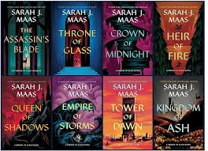

The story follows Celaena Sardothien, a notorious assassin who must navigate a world of political intrigue, lost magic, and looming darkness. The emotional and narrative scope broadens with each book, making this journey readers will never forget.
Deep character evolution: The characters in this series grow and change, watching Celaena begins as an arrgoant assassin, but evolves into a complex queen destined for a greater purpose. The character work, paired with development of allies and adversaries, creates a wonderful world to get lost in.
Rich, expansive world-building: While the first book mostly stays confied, the world expands into and epic, continental-spanning war. Maas creates Erilea with fascinating magic systems, different cultures, and ancient lore, making the final battle feel truly grand in scale.
Slow-burn romance and intricate relationships: The romantic entanglements are complex, with a slow-burn that is incredibly rewarding. The emtionals stakes are high, and the relationships are built on shared trauma, mutal respect, and pwoerful connection.
High-stakes action and plot twists: The series is packed wiht surprising reveals, hear-wrenching moments, and climactic battles. Maas keeps readers on their toes with a plot full of suspense and payoff.
Verdict: If you are a fan of ACOTAR, Throne of Glass is the perfect next read. While the early books are more young, the series rapidly matures, delivering an emtionally devastating conclusion.
Rating: 9/10
